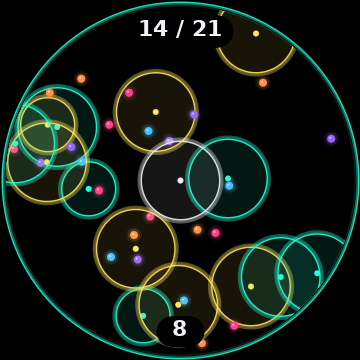
Boomshine
Dots drift across the round screen. Set off a single blast and every dot it catches bursts too, across twenty levels that only get busier. NeoN rings on black, or Pop! pastels. Your music keeps playing.
How to playA new interface for the Disc's round screen. The album you're playing fills it, and everything else is yours to arrange, recolour, and fill with apps: play by mood, see your year in music, or set off a chain reaction between songs.
Free and open source. A testing release, provided as is. Built on b0hemia's diskOS; not affiliated with FiiO or Snowsky.
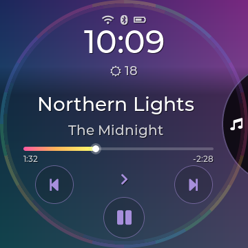
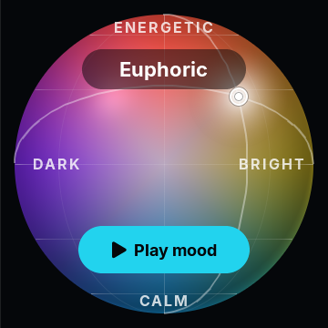
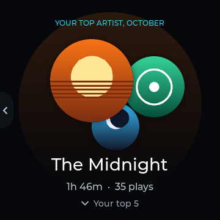
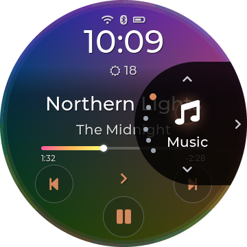
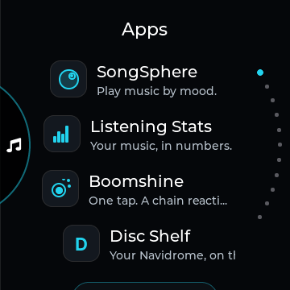
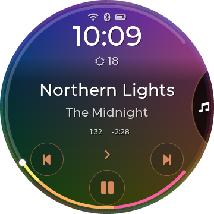
Music
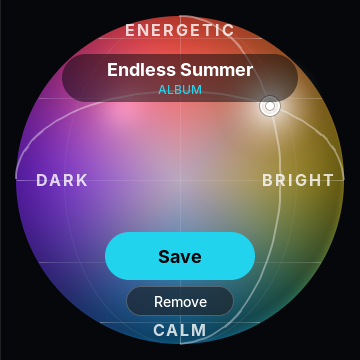
The album fills the screen, sharp. Over it: the time and the weather, the title and artist, a progress line you drag to seek, and play controls on an arc that follows the round edge.
Keep the original feel, go crisp with Inter Semibold, or soften the edges with Nunito Bold. Choose Track Font under Disco Options, Music Screen.
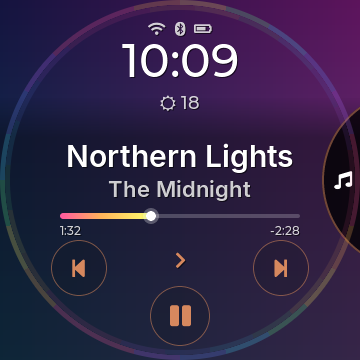
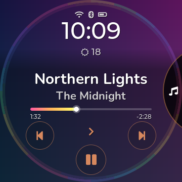
No home screen full of buttons. A small shard sits on the edge; tap it and a circle slides out with your sections. Tap the top or bottom to step through them, the middle to open one, or hold it to go back to Music.
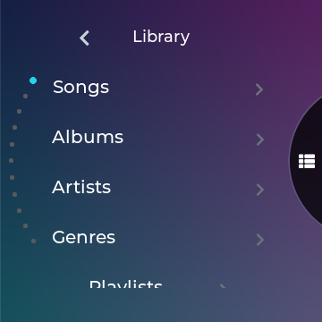
Place your music on a sphere, from Calm to Energetic and from Dark to Bright. Then drag to the mood you're in and play up to 40 songs from near that spot, in Shuffle, kept as a playlist if you like.
Hold an album or an artist in the Library and choose Mood, or tap the mood pill while a song plays. Drag the marker, save.
Open SongSphere, drag to a spot and play: a few songs per album and artist, recent plays less likely.
Built in since 2.2. Placements stay on your Disc; turn it off in Settings, Playback, SongSphere.
How SongSphere works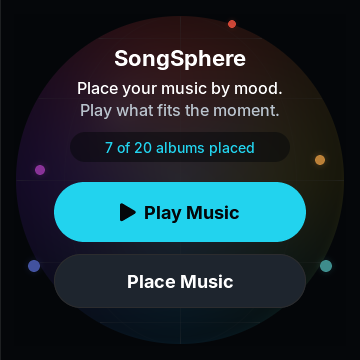
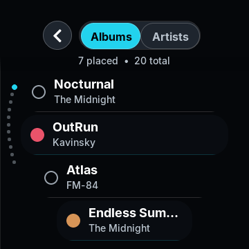
How long you listened this week, month or year and how that compares, your top artists, albums and songs, the song on repeat, and when you listen, round the rim. Swipe back through time; tap a #1 for its Wrapped.
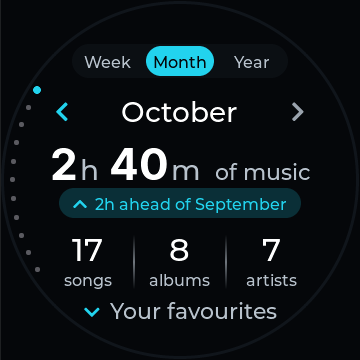
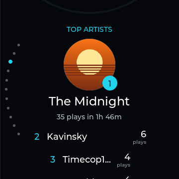
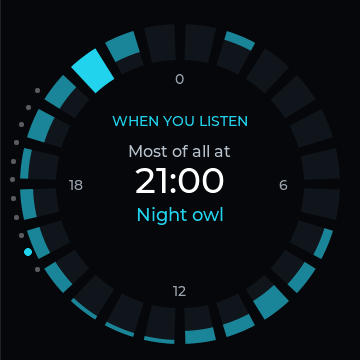
A song counts after 30 seconds; only the time it really played adds up. Nothing leaves the Disc.
Add Apps to the navigation circle and pick up to five, each with its icon. Every app opens on a landing page first, so stepping through the circle never starts anything by accident.
icon.bmp in the app's folder gives it its icon.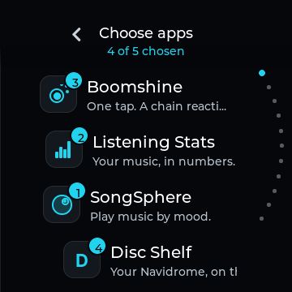

Dots drift across the round screen. Set off a single blast and every dot it catches bursts too, across twenty levels that only get busier. NeoN rings on black, or Pop! pastels. Your music keeps playing.
How to play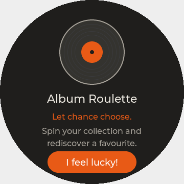
That album you loved and forgot? Round covers race across the screen, slow down and settle on a winner. Tap Play! and it plays in track order; long-press for another spin.
Install Album Roulette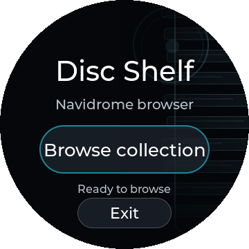
Your Navidrome server, like a record store: browse by artist, pick albums and download the original files to the Disc. Files already on the card are skipped; nothing is overwritten.
Install Disc ShelfLists follow the curve, nothing hides behind the menu, and every popup speaks the same language. Dark, light, or automatic by the time of day.
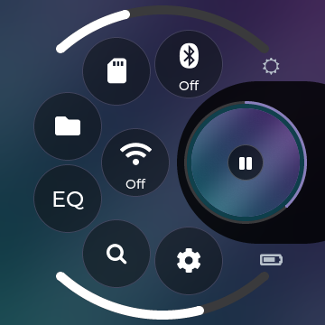
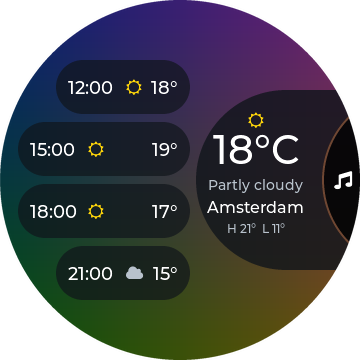
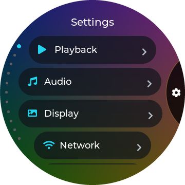
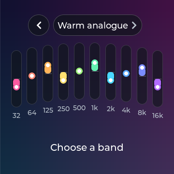
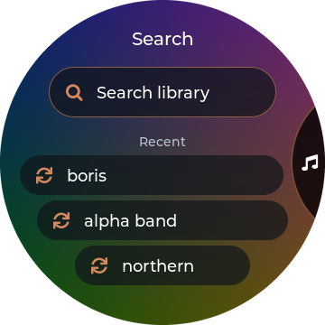
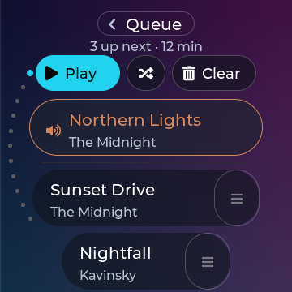
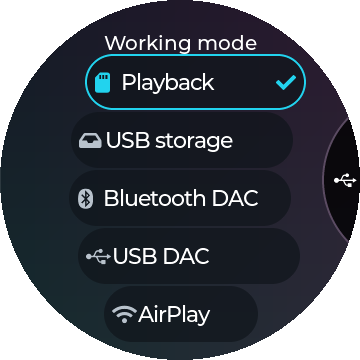
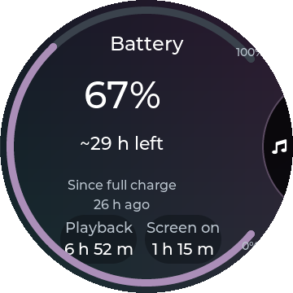
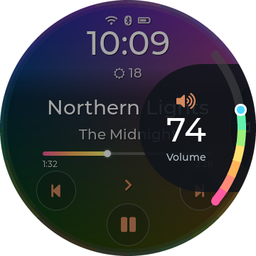
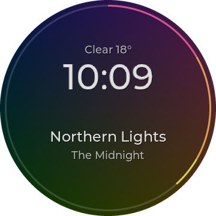
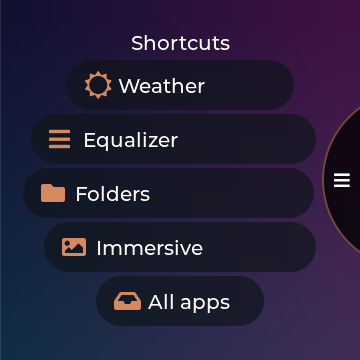
With MA Sendspin the Disc joins Music Assistant as a speaker: play your whole home library to it, in sync with your other rooms. Experimental.
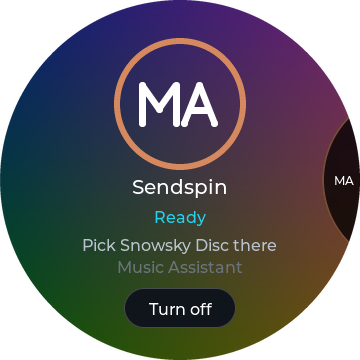
Settings, Display, Disco Options gathers everything about the Disco look in four short pages: Music Screen, Colours, Layout and the Disco Menu.
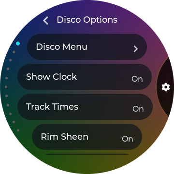
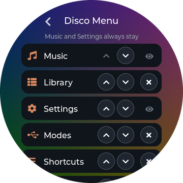
Signed builds from the card install as a trial and roll back by themselves if they don't start.
FiiO's own interface is one setting, or one held key at power-on, away.
Hold any song, album, artist, genre, file or folder for its actions. A tap still plays.
Two more complete themes with the same features and settings, under Display, Theme. Upstream's Stone is kept too.
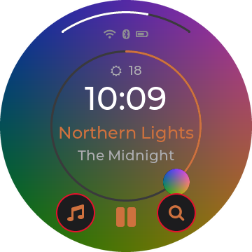
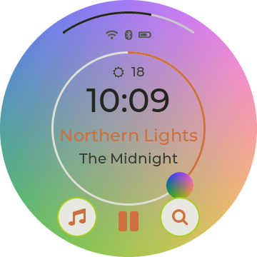
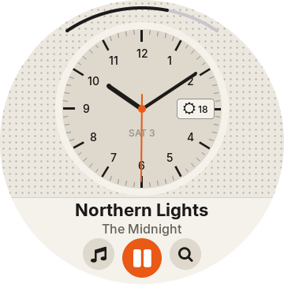
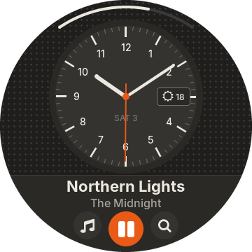
An app checks your PC, sets up everything it needs, flashes the Disc and later puts new versions on your SD card, signed with your own keys.
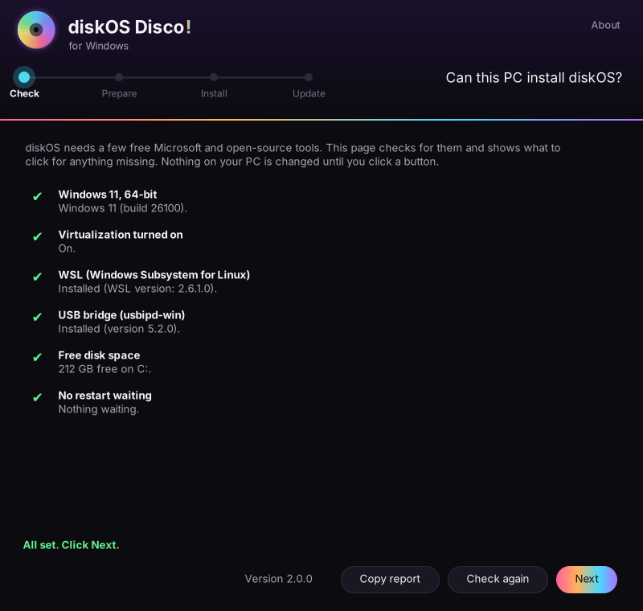
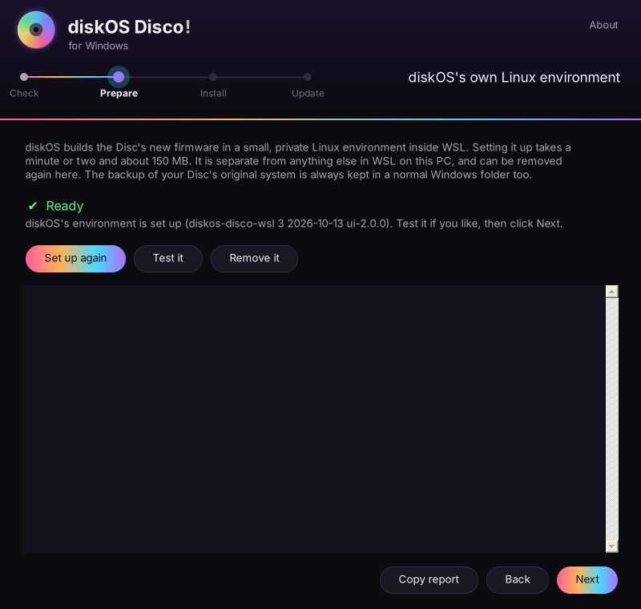
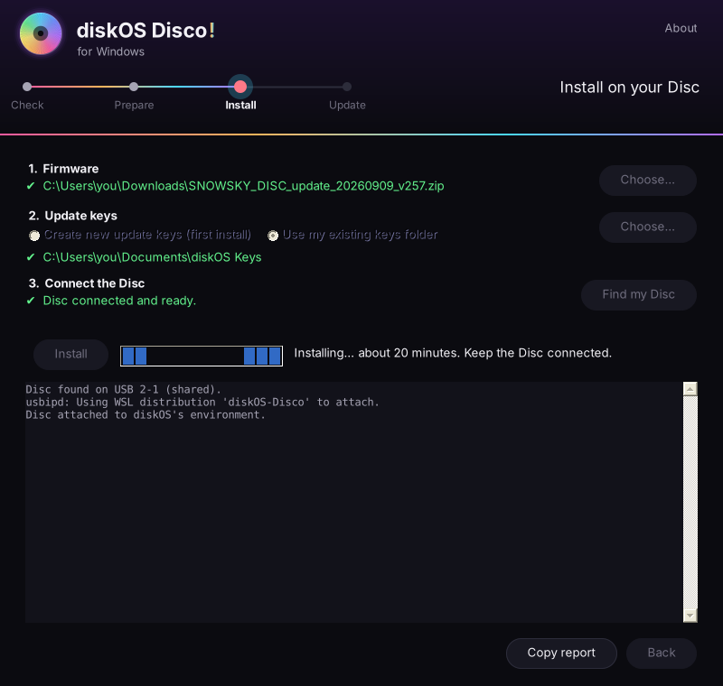
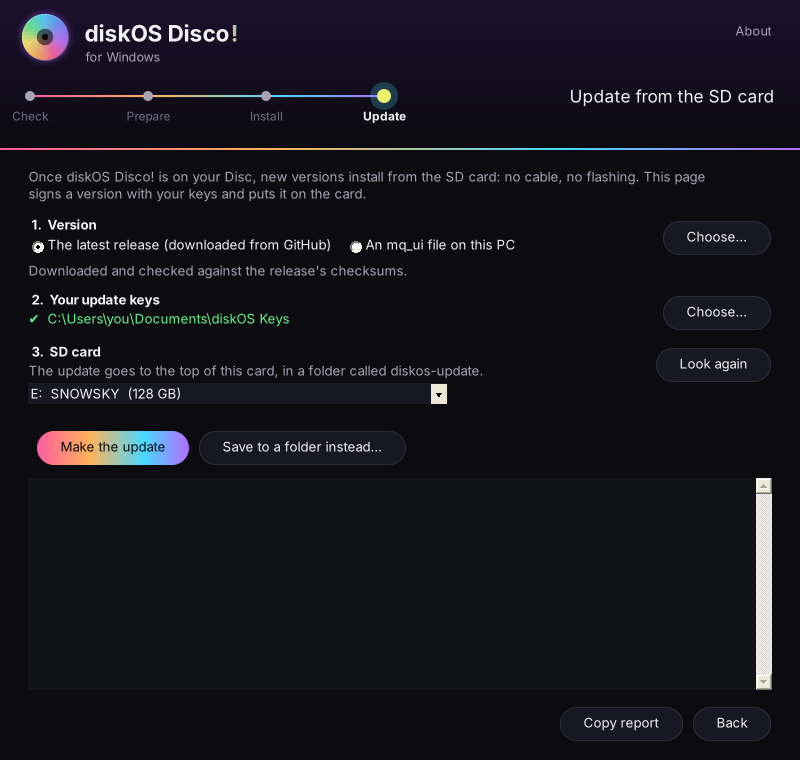
Windows 11, 64-bit, about 10 GB free, FiiO firmware V2.57. The same installer and safety checks as on Linux, with a backup of your Disc's original system. The app isn't code-signed yet: if Windows says it protected your PC, choose More info, then Run anyway.
You need a Snowsky Disc on FiiO firmware V2.57, FiiO's official V2.57 firmware ZIP and a good USB data cable. Twenty quiet minutes. On Windows, the app does it all.
Get the latest release or clone the repository for the
installer and signing tools. The repository includes the ready-built interface as payload/mq_ui.
Already installed with an update key but on a version before 1.4.1? Flash once more with that same key; later updates use the SD steps below.
git clone https://github.com/zmd22/diskos-disco.git
cd diskos-disco
./install.sh # first time only: host setupKeys let you install later builds from the SD card. If you already have trusted owner keys, reuse them: a new root key
isn't trusted by your current install. Keep private keys on your computer and back them up. Skip this and leave out
--ota-key if you only want to flash.
sh ui/tools/owner-keys/diskos-keys.sh # creates ./diskos-keys/
cp diskos-keys/diskos-root.pub.pem payload/Power the Disc off, hold Volume Down and plug in USB. Before you answer y, check that the
ota: ON … key sha256 line matches your key.
./diskos-installer install \ --firmware SNOWSKY_DISC_update_20260909_v257.zip \ --variant public \ --ui payload/mq_ui \ --ota-key payload/diskos-root.pub.pem
Download mq_ui and SHA256SUMS from the same release into one folder and check the binary.
For the included repository binary, use payload/mq_ui.
awk '$2 == "mq_ui" { print }' SHA256SUMS | sha256sum -c -
Expect mq_ui: OK. Then sign it with the keys matching the root key on your Disc:
sh ui/tools/owner-keys/diskos-sign.sh \ /path/to/mq_ui 2.2.0 \ /absolute/path/to/your/diskos-keys ./diskos-update
The output holds six files. Every signing run gets a later number than the one before (kept with your keys), so a repeat update is always accepted.
Copy the whole diskos-update folder to the SD card's top level (<SD>/diskos-update/mq_ui),
eject, then on the Disc choose Settings › System › Maintenance › Update from SD Card › Update and restart when prompted.
UI updates don't install the separate apps.
Check Settings › System › About for the new version (Disco! 2.2.0). Keep it running for at least three minutes and play music; it can be accepted automatically, or choose Keep when asked. Go back and a restart revert it. An unproven trial rolls back after two trial boots.
The full SD update guide covers key checks, trials, rollback and troubleshooting.
diskos_*.bin images: they contain FiiO's firmware.